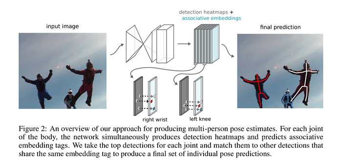
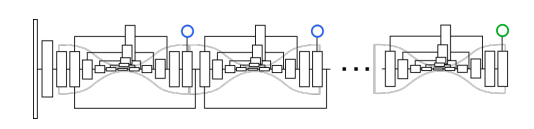
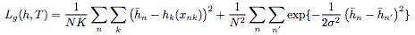
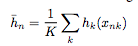
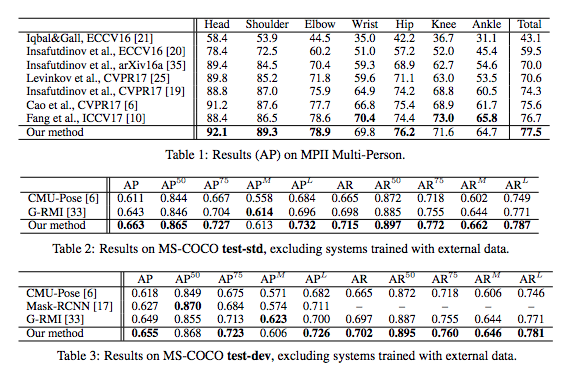

URL:https://papers.nips.cc/paper/6822-associative-embedding-end-to-end-learning-for-joint-detection-and-grouping.pdf
【Summary】 Pose estimation 任务中另一个典型的bottom up模型，论文的motivation感觉比OpenPose的PAF更加直观易懂，就是为每一个joint学习一个tag用来标记一组joint。然后再用贪心的逻辑来做group。
下图是论文中给出的整个方法的Pipeline，整个网络总共有两个分支，一个输出关键点位置的heatmap，文中称之为detection，另一个分支就是本文的核心associative embedding，论文中称之为grouping：

至于论文中用到的backbone网络是比较常见的hourglass：

Associative Embedding
论文中提及的embedding可以理解为对人物个体的标记，和NLP中的word embedding一样，embedding的维度其实可以是任意的，本论文中作者通过实践觉得1维的embedding 就足够了，所以对于detection的每一个channel在grouping中都一个同样大小的channel与之对应。
在网络训练的时候Detection Loss就是普通的MSE而Grouping Loss是如下设计的：

其中：

hk是grouping中一个输出的channel，x为具体的位置，这主要涉及到论文中的reference embedding，reference embedding就是一个人物个体所有joint 在grouping中输出的均值作为对这个人物个体的表示。而在具体的Loss函数中前半段就是把输入同一个人物个体的joint尽量拉近，而公式的后半段就是把不同的人物个体相互拉开。
具体Inference的时候通过某一个joint的heatmap的峰值来确定检测到的人的pool，然后再依次去利用其他joint的tag来和这个pool里面的人进行match。如果当前这个joint无法和pool里面的任意一个人match，那么就会作为单独的一个人加入到这个pool，然后一直进行这样的贪心流程。
作者在COCO和MPII数据集上分别做了测试，从结果上来看点还是比较高的：
